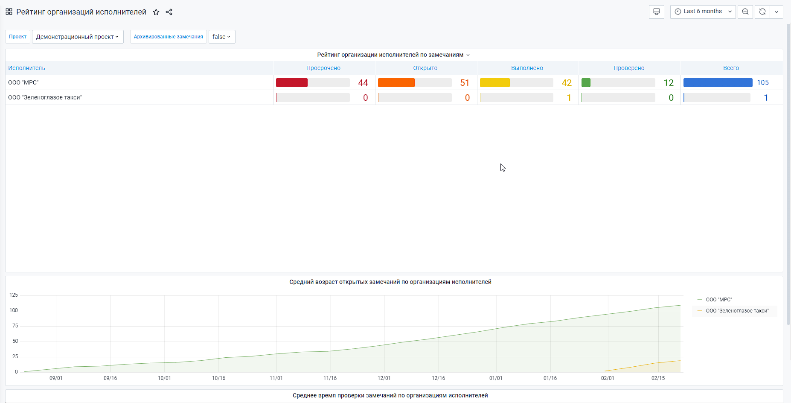

Раздел «Аналитика» (Рис. 1) позволяет с помощью графиков наглядно отслеживать успехи по проделанной работе
сразу по нескольким графикам с разных элементов структуры, по проектам, по подрядчикам и так далее.
Все графики показывают аналитику на данный момент с точностью до минуты.
Но у вас есть возможность задать временной период, за который вы хотите просмотреть отчет (Рис. 2).
Для этого установите временные границы в меню.
Рис. 2. Выбор временного диапазона
Примечание
При выборе временного диапазона нельзя выбрать будущую дату. Аналитические отчеты формируются только за прошедший период.
Архивированные замечания
Кнопка «Архивированные замечания» позволяет включать в аналитике замечания, которые были заархивированы (Рис. 3).
Рис. 3. Включение в аналитику архивированных замечаний
После настройки фильтров, обновите график, нажав на кнопку в верхней правой части экрана.
Рейтинг авторов по состояниям замечаний (Рис. 6).
График показывает количество замечаний, созданных сотрудниками, по состояниям в выбранном периоде.
Рис. 6. Рейтинг авторов по состояниям замечаний
Рейтинг исполнителей по состояниям замечаний (Рис. 7).
График показывает количество замечаний, назначенных сотрудниками, по состояниям в выбранном периоде.
Рис. 7. Рейтинг исполнителей по состояниям замечаний
Рейтинг категорий по состояниям замечаний (Рис. 8).
График показывает количество замечаний по состояниям в выбранном периоде по каждой категории.
Рис. 8. Рейтинг категорий по состояниям замечаний
Рейтинг организаций авторов по состояниям замечаний (Рис. 9).
График показывает количество замечаний, созданных всеми сотрудниками конкретной организации, по состояниям в выбранном периоде.
Рис. 9. Рейтинг организаций авторов по состояниям замечаний
Рейтинг организаций исполнителей по состояниям замечаний (Рис. 10).
График показывает количество замечаний, назначенных всеми сотрудниками конкретной организации, по состояниям в выбранном периоде.

Рис. 10. Рейтинг организаций авторов по состояниям замечаний
Сводный график по количеству замечаний (Рис. 11).
График показывает общий прогресс по замечаниям за выбранный период, а также количественные показатели на конкретную дату.
{kind=link}

{kind=link}
 в верхней правой части экрана.
в верхней правой части экрана. . После её нажатия справа появится меню выбора графиков (Рис. 4).
. После её нажатия справа появится меню выбора графиков (Рис. 4).{kind=link}
{kind=link}
{kind=link}
{kind=link}
{kind=link}
{kind=link}
{kind=link}
{kind=link}